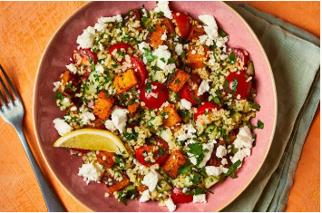
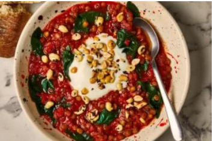
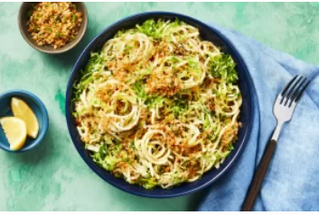

| Lunes | Martes | Miercoles | Jueves | Viernes |
|---|---|---|---|---|
|  |  |  | ||
| El tabulé es una ensalada de trigo bulgor, tradicionalmente servida como parte de un mezze. Nos encanta la sensación de la calabaza especiada, el pepino fresco, los tomates, el perejil , el limón y el queso, todo mezclado. Para hacerla sin gluten, reemplazamos el trigo por quinoa ¡La comida rápida y fácil perfecta! | Para este estofado rápido a base de plantas, seguimos el gran secreto de las recetas indias: tostamos especias antes de agregar el resto de los ingredientes: esto permite sacar los mejor de las especias y convertir este plato en una fragante cena. Cubrimos con maní picante y crema de almendras para servir. | ¿Querés que te hagamos las cosas aún más faácil? Ok, deseo cumplido: Este plato no requiere absolutamente ningún trabajo previo, solo cociná el relleno, armá los tacos y hornealos. ¡Así que guardá tu cuchillo y disfrutá de tu HolaVeggie sin estrés ni desorden! | Amantes de las pastas, no se pierdan esta deliciosa cena. Primero preparamos los ingredientes, luego salteamos el panko con ciboulette. Mientras los spaghettis se hierven, cocinamos los coles de bruselas rallados a la sartén. Luego hacemos la salsa alfredo, que es tan simple como combinar en una ollita queso crema con agua y ajo. Finalmente combinamos todo, agregamos limón a gusto ¡y a comer! | La India en tu casa, al menos por un rato. Te traemos esta delicia oriental, con sabores totalmente nuevos que vas a querer repetir. Nuestra salsa malai es a base de leche de coco, con especias tales como curry y jengibre. Las koftas de papa se doran y se sirven acompañadas con espinaca salteada y chutney de tomate. Imperdible |